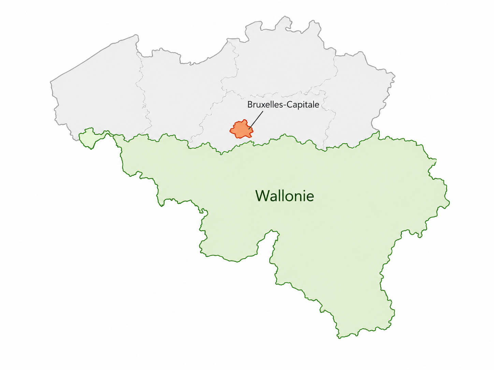
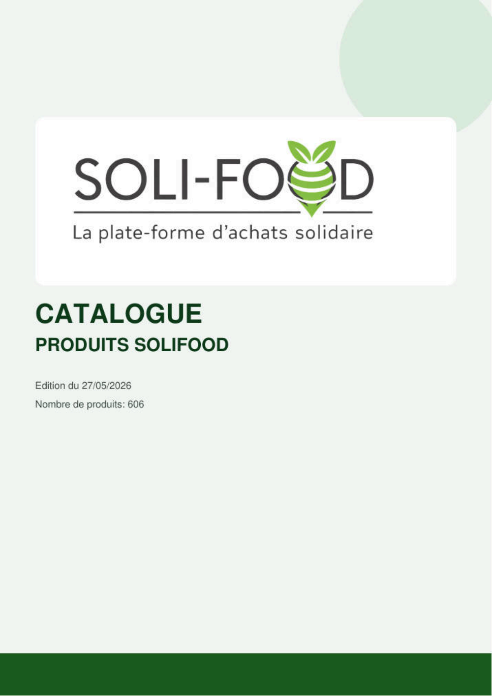
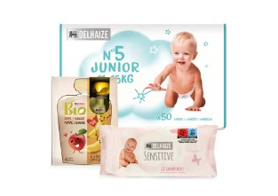
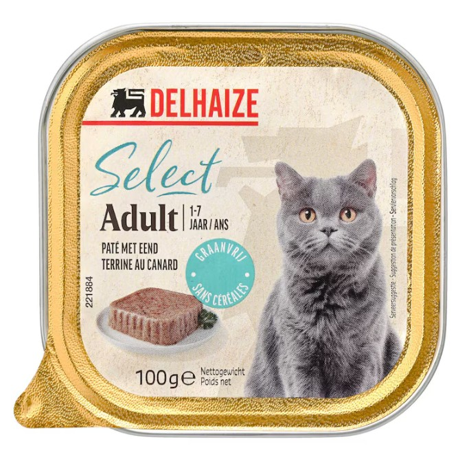
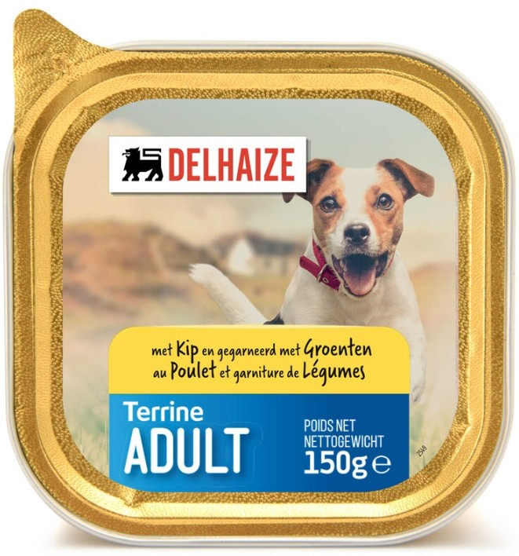
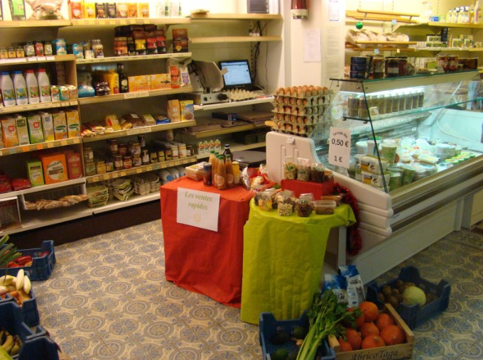
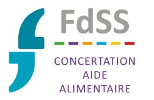

1 Belge sur 7
est concerné par la précarité.
Approvisionnement solidaire • Belgique
Soli-Food centralise les achats, simplifie le transport et sécurise les stocks pour les structures d'aide alimentaire.
Contexte social

est concerné par la précarité.
est concerné par la précarité.
est concerné par la précarité.
Le concept
Soli-Food soutient les organisations d'aide alimentaire via un modèle d'achats mutualisés, un cadre logistique optimisé et une interface de commande simple avec suivi historique.
Flux logistique
Achat auprès d'entreprises partenaires et fournisseurs locaux.
Regroupement des références pour maîtriser les coûts et la disponibilité.
Distribution vers épiceries sociales, restaurants sociaux et centres colis.
Une organisation claire entre commande, préparation et livraison pour sécuriser l'approvisionnement des structures.
Fournisseurs partenaires, achats directs et produits disponibles.
Commande, consolidation et pilotage logistique mutualisé.
Maisons Croix-Rouge, CPAS, épiceries sociales et associations.
Bénéficiaires, aide de terrain et solidarité locale.
Un circuit solidaire du producteur au bénéficiaire.
Un rythme régulier pour anticiper les besoins, consolider les volumes et fluidifier les livraisons.
Les structures préparent leur commande.
Consolidation des volumes.
Tri, préparation et sécurisation.
Distribution selon planning.
La fréquence hebdomadaire : un levier simple pour mieux organiser les commandes.
Avantages
Accès à des produits variés avec forte maîtrise budgétaire.
Moins d'efforts opérationnels sur l'approvisionnement quotidien.
Approvisionnements plus stables et meilleure continuité d'aide.
Organisation des flux pour limiter l'empreinte logistique.
Catalogue produits
Découvrez les grandes familles présentes sur la plateforme Soli-Food.
Consulter le catalogue complet






À quel prix ?
Le modèle Soli-Food permettra de diminuer les prix et les coûts de fonctionnement.
Vidéo Soli-Food
Terrain Soli-Food
 (1)/PNG-EOY 2023_Photo (107).png)
/PNG-Epicerie_Sociale_Test.png)
/PNG-DSC00715.png)
Ils l'ont testé
"Soli-Food est un super projet... un énorme soutien pour notre association."
Épicerie sociale Le P'tit Maga
"Pratique, facile, avec un rapport qualité/prix attrayant et un service de livraison impeccable."
Maison Croix-Rouge de Jumet
Partenaires

Avec le soutien de nos Partenaires publics et privés engagés dans l'aide alimentaire
Contact
Référence : Aldo Di Bari
Téléphone : 0496 12 46 93
Demande d'adhésion, information ou soutien : écrivez-nous.

Assistant Soli-Food